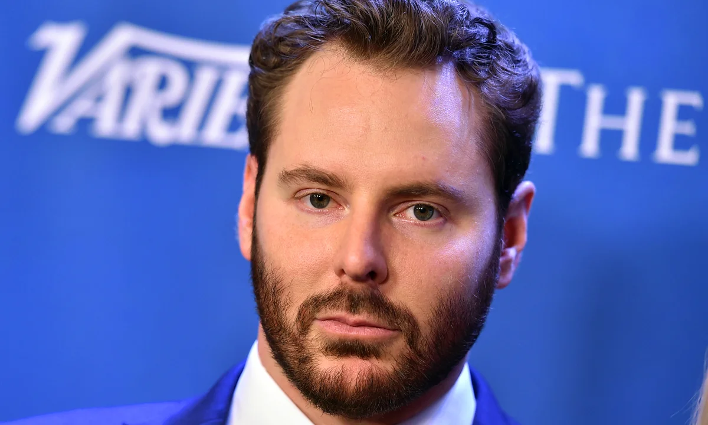
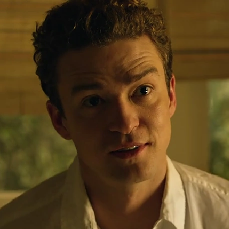
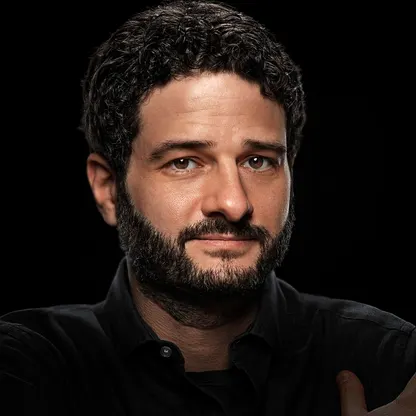
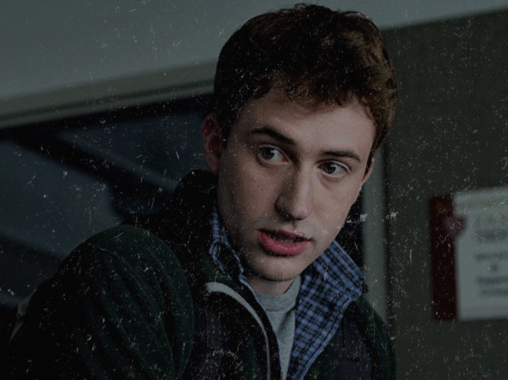
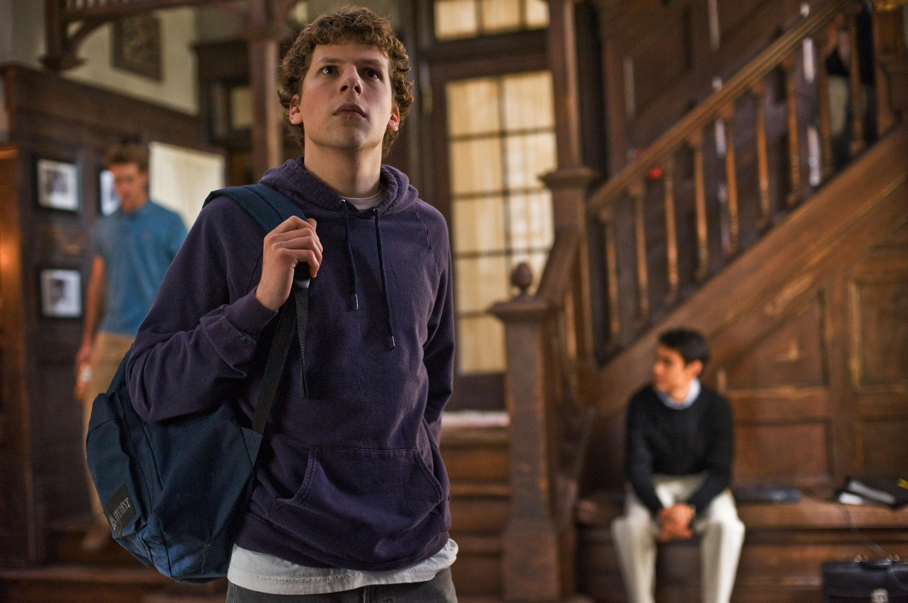
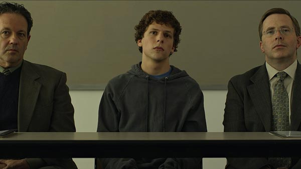

Sinopse
A criação do Facebook mudou o mundo digital. Mas por trás da genialidade de Mark Zuckerberg, existem traições, ambição e disputas que mostram o preço da fama e do poder.

Elenco
Mark Zuckerberg
Estudante de Harvard e criador do Facebook.
Personagem

Ator
Eduardo Saverin
Melhor amigo e cofundador do Facebook, sente-se traído por Mark.
Personagem

Ator
Sean Parker
Fundador do Napster e mentor de Mark, influenciou o crescimento do Facebook.
Personagem
Ator
Dustin Moskovitz
Co-fundador do Facebook, colaborou com Mark desde o início.
Personagem
Ator
Curiosidades
O filme foi lançado em 2010 e recebeu 8 indicações ao Oscar, vencendo 3. A trama foi baseada no livro "Bilionários por Acaso".


Contato
Confira mais sobre Mark Zuckerberg:
Perfil oficial no Facebook